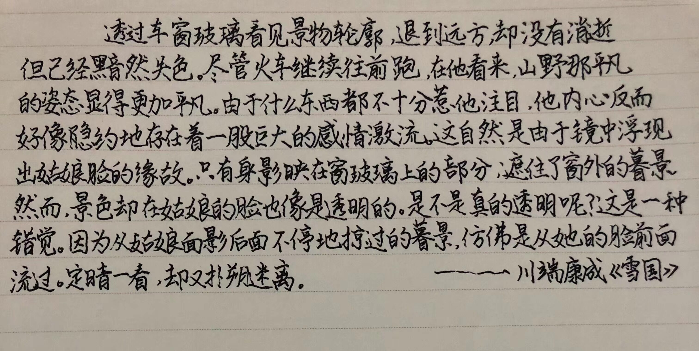
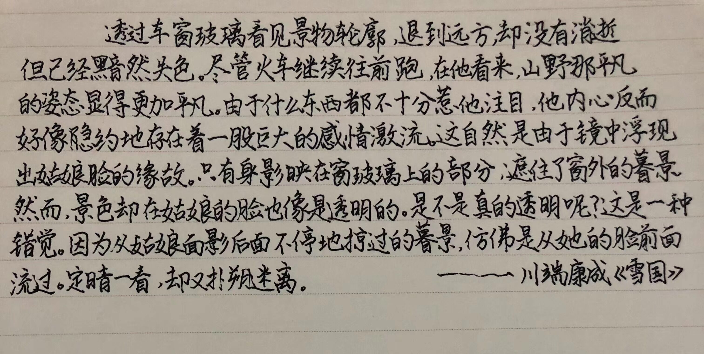

《雪国》
摘抄

人物介绍
川端康成（1899年6月14日～1972年4月16日），日本文学界“泰斗级”人物，新感觉派作家，著名小说家。1968年以《雪国》、《古都》、《千只鹤》三部代表作获得诺贝尔文学奖,亚洲第三位获诺贝尔文学奖的人。
川端康成是我最喜欢的一个日本作家，同时也是对我影响比较大的一个作家。而他的《千只鹤》则是日前看过最美的小说。
他书的封面上有着这样的话：“川端康成的笔下有着极为纤细的美”。诚然，川端康成笔下的世界是美的，但是那种没是悲戚的美，绝望的美。
鲁迅先生说过:"悲剧就是把美毁灭给人看"。这样来看，川端康成善于去创造美，同时也毁灭着美

茶碗拥有百年经纶，而拥有茶碗它的主人与茶碗相比，只占甚微岁月。茶碗被各色的人收藏，静观着他们的一生，或颠沛流离，或流光溢彩。而茶碗只是茶碗。
陶碗同成就于一人之手，本应成对。但人事纠葛却使其成单。志野陶的红釉没有文子嘴唇的温度，但碎裂的茶碗却同两人的内心。茶碗终究只是茶碗，但人也同陶器一般颠沛流离，破碎不堪。